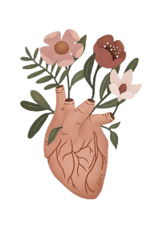

MARIA'S Health


Explorando os benefícios físicos e mentais do yoga para a saúde.
Dentre os diversos benefícios do yoga, estão a melhora da flexibilidade, redução do estresse, fortalecimento muscular e aumento da concentração. Assine já o seu plano de saúde e garanta três aulas experimentais com o Dr. Robson Robbert, ou caso já seja assinante entre em contato no e-mail para agendar suas aulas.
yoga.robbert@mariashealth
Nutricionista renomado, Dra. Anny é especialista em dietas equilibradas. Com mais de 30 anos de esperiencia, Dra. Anny já ajudou muitas pessoas a desenvolverem hábitos saudáveis! Especialista em nutrição para familias, ela auxilia crianças a se adaptarem aos novos alimentos que agora irão fazer parte de suas dietas de forma leve e divertida para que os baixinhos não estranhem seus novos alimentos e que além de terem uma alimentação saudável possam desfrutar dos doces sabores que alimentos como frutas têm, fazendo com que eles aceitem de forma tranquila a remoção dos açúcares em suas refeições!
Veja abaixo depoimentos de famílias e pacientes da Dra. Anny Smith